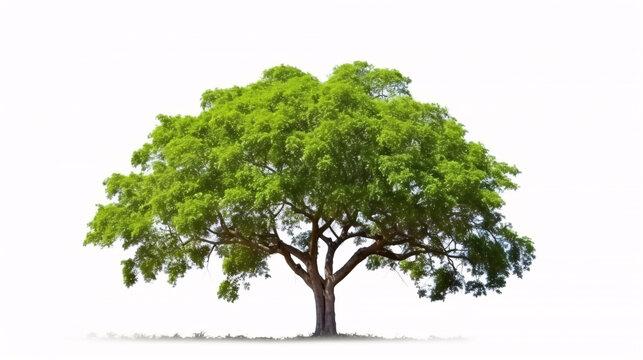

Neem - Azadirachta indica

A Neem Tree (Azadirachta indica)
Classification
- Kingdom: Plantae
- Order: Sapindales
- Family: Meliaceae
- Genus: Azadirachta
- Species: A. indica
Habitat
Neem is native to India and South Asia. It thrives in tropical and subtropical regions and is known for its drought resistance.
Uses
- Medicinal: Used to treat skin problems, infections, and fevers.
- Agricultural: Acts as a natural pesticide and insect repellent.
- Cosmetic: Found in soaps, shampoos, and face packs.
- Environmental: Helps in afforestation and air purification.
Benefits
- Boosts immunity
- Purifies blood and skin
- Eco-friendly alternative to chemical products
- Neem oil is great for acne and dandruff
Caution
Neem oil should not be consumed in large quantities—it can be toxic. Always use under proper guidance if using for health purposes.
Learn more on Wikipedia